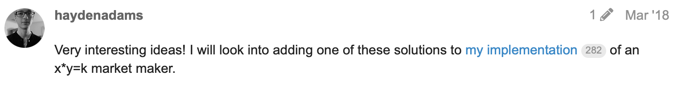
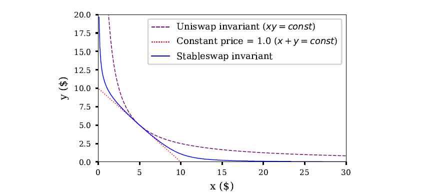
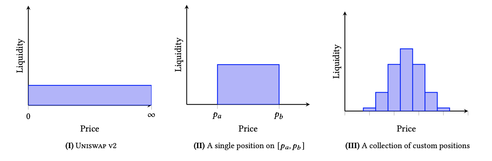
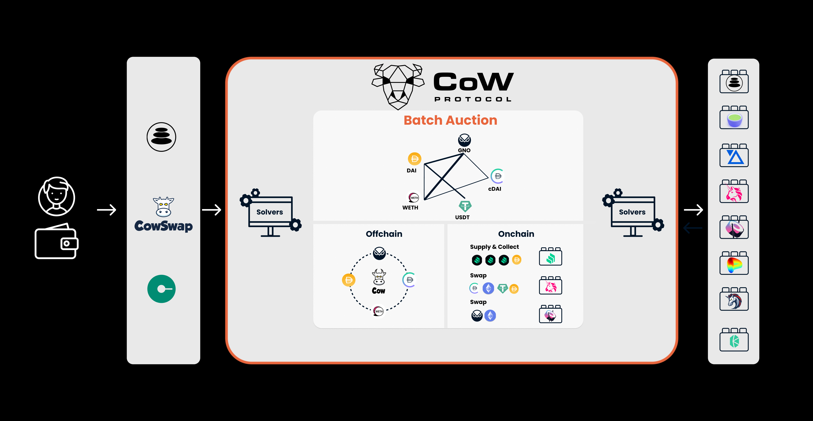
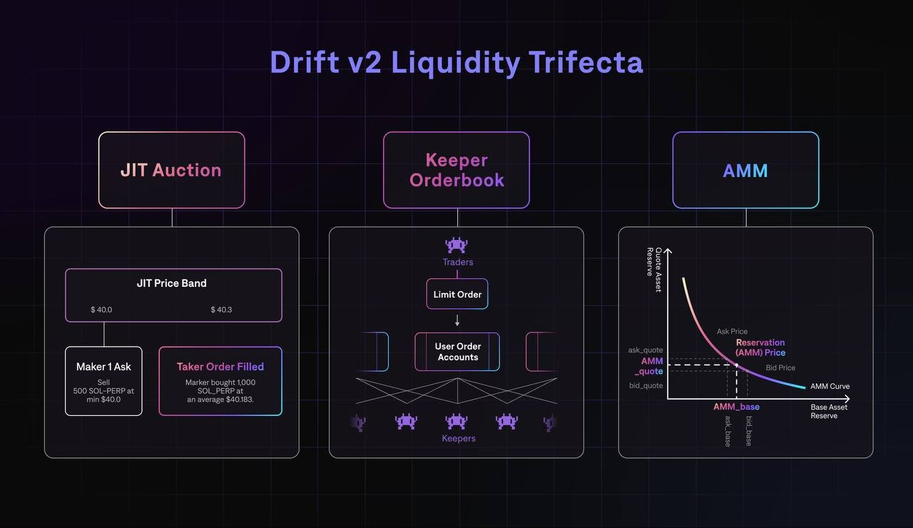

This post is meant to provide an overview of the Automated Market Maker (AMM) space. First by reviewing some of the history and various designs. Following will be a walkthrough of using AMM pricing functions for other applications than spot trading leading to interesting dynamics and the evolving relationship between onchain orderbooks and AMMs.
Everything written in the post is outlined in the following repository https://github.com/0xperp/awesome-amm
While the existence of AMMs truly took off with Uniswap there is quite a history to it.
Sep 2, 2015: Martin Köppelmann: Gnosis Market Maker Orderbook
Sep 26, 2016: Nick Johnson: Euler
Oct 3, 2016: Vitalik: Let's run on-chain decentralized exchanges the way we run prediction markets
Mar 6, 2017: Alan Lu: Building a Decentralized Exchange in Ethereum
Mar 2, 2018: Vitalik: x*y=k market makers
x*y=k automated market maker with further simulations and functions
Interestingly on the same day that Hayden posted his comment on the Uniswap V1 implementation, Bancor released their initial whitepaper. Bancor’s primary innovation was their Smart Tokens (can be thought of as a very early router).
If there is a notable design not listed please comment or send a DM my way
Below is a list of common AMM designs and their pros and cons
The constant product market maker is the most common AMM invariant that exists. It can be simply modeled as x * y = k . X and Y are the reserves for each asset, as assets are traded through this function X and Y increase or decrease in their reserves in a way that keeps a constant K (not counting fees charged).
Constant Product Market Maker
The constant product formula has generally become the most forked AMM invariant, primarily due to its simplicity and ease of use from a liquidity provider's perspective.
Curve launched an AMM with the stableswap invariant primarily to cater to stablecoins and pegged or like-priced assets.
The Curve team realized that like-priced tokens can trade on a constant sum, x + y = C for the majority of the time. However, when a pool does become imbalanced Curve adjusts to the constant product invariant making swaps more expensive and allowing arbitragers to bring the reserves of each asset back to equal.

Stableswap
Here is a very good post on understanding the Stableswap invariant
Balancer proposed and launched a generalization of the constant product market maker, the constant mean invariant. This allowed more than two assets to be provided as liquidity and for weights outside of 50/50.
Given this Balancer and other constant mean market makers can be used as a portfolio manager

Constant Mean Market Maker
For a very good understanding of Balancer refer here
Uniswap V3 was launched as the first concentrated liquidity AMM. This allows for liquidity that is allocated within a custom price range. In earlier versions, liquidity was distributed uniformly along the price curve between 0 and infinity. Allowing custom liquidity distributions allows for much higher capital efficiency resulting in more flexibility for a liquidity provider regarding their exposure and payoff along with a deeper and tighter market for a trader.
Concentrated Liquidity relies on the concept of virtual liquidity which can be read and derived in their whitepaper

Various liquidity distributions
A virtual automated market maker (vAMM) uses formulas, such as constant product, but only as a price discovery mechanism.
Generally, a vAMM product is designed with a "clearing house" or "controller" contract in which all of the collateral deposits are held.
vAMMs are primarily used for leverage on crypto perpetual futures contracts in which the collateral in the clearing house backs virtual assets that users can trade. However, they can be used to trade just about any price feed given sufficient liquidity and traders. For example overlay.market allows you to trade various data streams or nftperp.xyz which allows a trader to long or short floors of various NFT projects.
Following the release of Perpetual Protocol's first vAMM there have been many iterations since, particularly with the price discovery mechanism.
Quick aside: Even though this was based on the lightning network and did not explicitly mention a virtual automated market maker it seems like the Rainbow Network was one of the first written ideas of using collateral in one asset to trade virtual price feeds
There have been many iterations of vAMMs trying multiple AMM invariants for their pricing to drive higher liquidity, more consistent funding rates, and trying to attract more traders.
A few notable examples are
To date a large majority of vAMMs are “player v. player” there has been some pretty good research from the rage.trade team on this in The Perpetual PvP Ponzi. With advancements like using newer AMM invariants (eg. concentrated liquidity) or adding in various market layers (like Drift V2 and JIT), vAMMs have the potential to become a preferred market for trading any asset (or data feed!).
A vAMM simply uses traditional AMM formulas for its pricing which allows for an almost infinite number of assets and product types to trade along with a lot of flexibility and experimentation on the execution and order-flow layer.
High-performance chains like Solana and Near along with the upcoming variety of Diem forks (Aptos, Sui, OL, etc.) have allowed for the creation of on-chain orderbooks. Some of them are listed below
Orderbooks have the benefit over traditional AMMs as markets can be quoted very tight given traditional market makers will (generally) help to provide liquidity, trades can execute quickly, and this often leads to better pricing.
While orderbooks excel in providing optimal pricing and execution the catch is: There needs to be enough liquidity and active market makers constantly updating their quotes. This is especially important when you consider the pure number of assets traded onchain.
AMMs excel in this case as they support
When designing an orderbook or an AMM order flow and the provisioning of liquidity are very important. The flow of orders into the exchange along with how they are matched is important to ensure the best possible execution for a trader. Similarly, the provisioning of the liquidity to be used for matching orders is equally as important as it helps determine the best prices for traders.
Orderflow and matching are important to an exchange, particularly in assets that trade in large volumes, as poor execution can result in a bad experience for traders.
The provisioning of liquidity is important for longer tail assets as they are generally less liquid. This means that the liquidity that is provisioned needs to be provided in the most capital-efficient way possible to ensure the best execution for a trader.
Below are overviews of how various orderbooks and AMMs orders currently flow and match along with how liquidity is provisioned on them with a discussion on what various hybrid implementations look like.
There are currently a few ways in which orders are matched and/or routed into a trading protocol. A centralized orderbook runs its own internal matching engine, a decentralized orderbook operates its matching via a network of validators and/or keepers and generally, AMMs are at the mercy of the block producers.
As mentioned above generally AMMs order flow and its matching are at the mercy of the block producers.
When a user initiates a swap on an AMM they submit their order which is propagated throughout the mempool waiting to be included in a block (executed). The rise of searchers extracting value from the mempool (MEV) leads to far different dynamics for AMMs flow and matching.
Operating as a block producer (or bribing one) grants priority access to flow, how it is ordered and matched.
Sometimes this results in better execution for traders such as in the case of Just in Time Liquidity (JIT). This is when a searcher sees a order in the mempool and re-orders the transactions into:
This allows the searcher to only provide liquidity for a specific trade and collect a majority of fees for it, this results in better execution for the trader.
JIT is an anomaly, frontruns, backruns, and sandwiches all result in worse execution for the trader.
The struggle with a majority of AMMs is that all of their flow and matching can be directed and re-ordered by the block producers.
Serum refers to the process of matching as crank tuning. Anyone is allowed to run a cranker and be rewarded with a portion of transaction fees for it. This is an example of an onchain orderbook, all orders are posted on chain and crankers ensure that they are being matched and executed properly.
In dydx V4 the dydx chain will have an offchain orderbook in which validators will each host a copy of the orderbook and match accordingly as they are selected to propose a block.
In dYdX V4, each validator will run an in-memory orderbook that is never committed to consensus (i.e., off-chain). Orders placed and cancellations will be propagated through the network similar to normal blockchain transactions, ensuring that orders placed and cancellations will always make their way through the network. The orderbook that each validator stores is eventually consistent with one another. On a real-time basis, orders will be matched together by the network. The resulting trades are then committed on-chain each block. - dydx.exchange/blog/dydx-chain
Creating an offchain orderbook in memory of the validators (or keepers) of your network can be extremely effective as it allows you to have a decentralized orderbook.
A primary difference between offchain and onchain orderbooks (dydx and serum) is how and where orders flow.
An onchain orderbook like Serum all orders are posted and matched onchain meaning that all orders (filled or canceled) are visible to everyone onchain and all keepers (the matching engine) see and match the exact same orders.
An offchain orderbook like dYdX v4 differs in its flow and (potentially matching). Orders are submitted to validators and thus need to be fully propagated in order for all validators to have the exact same set of orders (see The orderbook that each validator stores is eventually consistent with one another in the dydx chain excerpt above).
When orders are not fully posted on chain and are submitted to some type of validator or keeper network, the flow can be controlled, bribed, and prioritized directly at the protocol level.
With the rise of proprietary block building (Flashbots on Ethereum, Jito on Solana, Skip on Cosmos) controlling, bribing, and prioritizing flow is also possible for onchain orderbooks but outsourced to external block builders.
A good example of how reflexive it can be for a protocol to be able to incentivize and direct flow could be seen in something like this. A large trader on dYdX is already incentivized to acquire $DYDX for fee discounts but is also incentivized to acquire $DYDX so that they can run a validator node. When a large trader operates their own validator they can control the local flow of orders. Meaning when they are a block proposer they could prioritize their own orders and trades allowing the trader to ensure the best execution possible.
In an onchain model generally orders flow directly onchain where they are matched and executed by an external keeper network. In an offchain model, orders flow directly into the validator or keeper network in which they are matched and executed.
A primary example using both on and off-chain matching and execution can be found in CowSwap which uses batch auctions and order routing to fill either off or onchain.

CowSwap allows for optimal execution for traders by batching orders to find any that could be matched together and if not settling onchain on an AMM.
Through batching offchain and settling onchain if needed, CowSwap first directs the flow of orders offchain for optimal execution and if not matches it onchain (executing the trade as best as possible).
Another example can be found in Drift V2. Orders will flow and be matched through various forms of liquidity. Launching as the Liquidity Trifecta, Drift orders will flow through an auction, offchain order book, and AMM resulting in optimal execution for traders.

Orders flow as follows
By allowing orders to flow through multiple exchange venues a trader can see the best of both worlds. They can have optimal execution and ensure that they will always be filled.
If you have been paying attention to the on-chain trading space over the last few years you will have noticed that AMMs (spot or virtualized) and orderbooks have started to feel the same.
Both AMMs and Orderbooks can now trade just about any asset long/short and with leverage: spot, expiring options or futures, perpetuals, everlasting options, or power perpetuals, etc. In fact, the primary difference between them is how their liquidity is provisioned and the management of it.
Just in Time Liquidity (JIT) and the ability to provide passive liquidity onto an orderbook have begun to blur the lines between an AMM and an orderbook.
Just in Time Liquidity
In a concentrated liquidity AMM rather than providing passive liquidity or managing it by re-quoting your ranges, JIT is the concept of waiting for a trade, immediately provisioning liquidity explicitly at the price quoted, and then removing your liquidity.
As you might be able to see this type of order execution starts to look like a janky RFQ orderbook, traders receive a quote, queue their trade, and are filled (often at a better price) prior to the trade even hitting the passive liquidity in the pool.
JIT allows for active liquidity to be provisioned for any trade on an AMM.
Active Liquidity Managers
Various products like gamma, arrakis, or charm recognized that in a concentrated liquidity AMM and the ability to quote your own upper and lower tick ranges there needs to be a product that can actively manage all of the passive liquidity currently provided to an AMM.
Through a network of keepers, managers operate various strategies based on the total liquidity and volatility of a given pool.
Active liquidity managers allow for passive liquidity on an AMM to be actively managed.
Orderbooks often struggle to list new assets as fast as they can be provisioned on an AMM. This is due to insufficient market maker interest and thus liquidity that can actively quote prices.
Some projects have recognized that in order to create more depth in a given market passive liquidity might be able to help.
Taking passive liquidity batching it and layering it on top of the orderbook so that it follows the curve of a given AMM invariant can greatly help to provide more consistent pricing and quotes in an emerging market.
Passive liquidity provisioning allows for liquidity to be added to an orderbook according to an AMM invariant
First realized by MEV searchers and implemented on Uniswap V3, JIT helps to provide better and more active price quoting on an AMM.
The vAMM Drift has implemented JIT liquidity into its V2 design. A given trade will first be routed to market makers who have a short amount of time in which they can choose to take the other side of the order. If the order is not or partially filled the remaining quantity will be routed to the passive liquidity providers. This allows traders to always receive the best execution possible.
The AMMs Raydium and Atrix have started to take passive liquidity and add it as a various set of orders on top of the Serum orderbook, providing further fees for liquidity providers and deeper markets for Serum.
The orderbook 01 took a similar approach and in other to provide deeper liquidity to their orderbook allowed users to provide passive liquidity which would then be batched and provided according to the constant product invariant on the 01 orderbook.
As hybrid implementations for order-flow and liquidity provisioning continue to be iterated on we are moving closer to the final design for on-chain trading. One that can support practically any product, permissionless markets, with great execution, depth, and liquidity.
If you find the AMM/Orderbook space interesting, are working on a new idea, just kicking around some new research, or have comments / thoughts on this article feel free to reach out on Twitter @0xperp